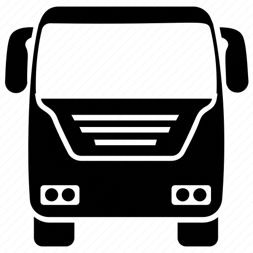

<ion-app>
  <!-- Menu Lateral -->
  <ion-menu contentId="main-content">
    <ion-header>
      <ion-toolbar color="primary">
        <ion-title>
          
          InnovaTransit
        </ion-title>
      </ion-toolbar>
    </ion-header>
    <ion-content class="ion-padding">
      <ion-list *ngIf="isMotorista">
        <ion-item button [routerLink]="['/motorista/iniciar-jornada']">
          Iniciar Jornada
        </ion-item>
        <ion-item button [routerLink]="['/motorista/iniciar-tarefa']">
          Iniciar Tarefa
        </ion-item>
        <ion-item button [routerLink]="['/motorista/finalizar-tarefa']">
          Finalizar Tarefa
        </ion-item>
        <ion-item button [routerLink]="['/motorista/exibir-viagens']">
          Exibir Viagens
        </ion-item>
        <ion-item button [routerLink]="['/auth/login']">
          Sair
        </ion-item>
      </ion-list>

      <ion-list *ngIf="isGerente">
        <ion-item button [routerLink]="['/gerente/painel-operacao']">
          Gerenciar Operações
        </ion-item>
        <ion-item button [routerLink]="['/gerente/painel-api-externa']">
          Configuração API
        </ion-item>
        <ion-item button [routerLink]="['/gerente/configuracoes']">
          Configurações
        </ion-item>
        <ion-item button [routerLink]="['/auth/login']">
          Sair
        </ion-item>
      </ion-list>
    </ion-content>
  </ion-menu>

  <!-- Conteúdo Principal -->
  <div class="ion-page" id="main-content">
    <ion-router-outlet></ion-router-outlet>
  </div>
</ion-app>
